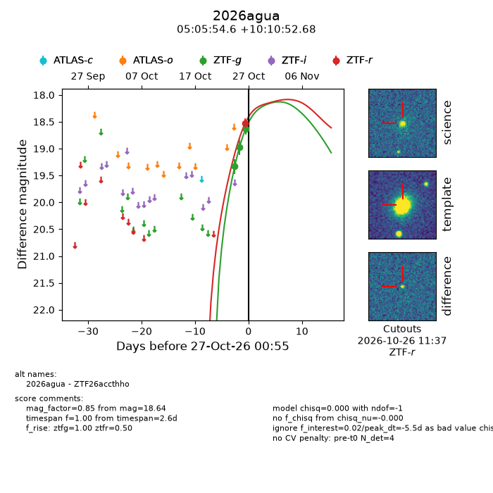
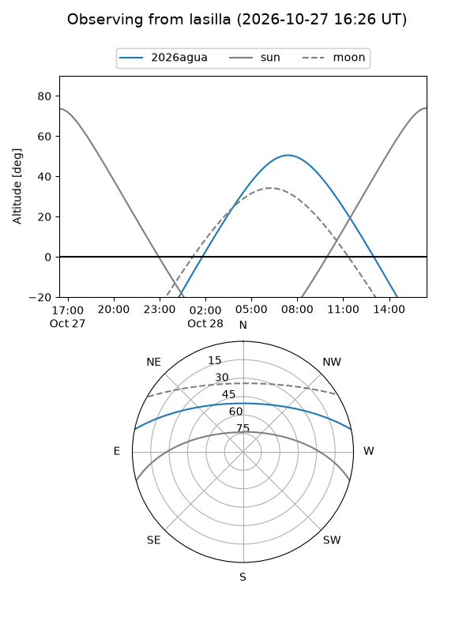
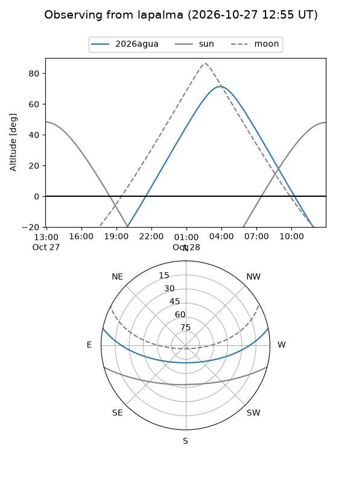
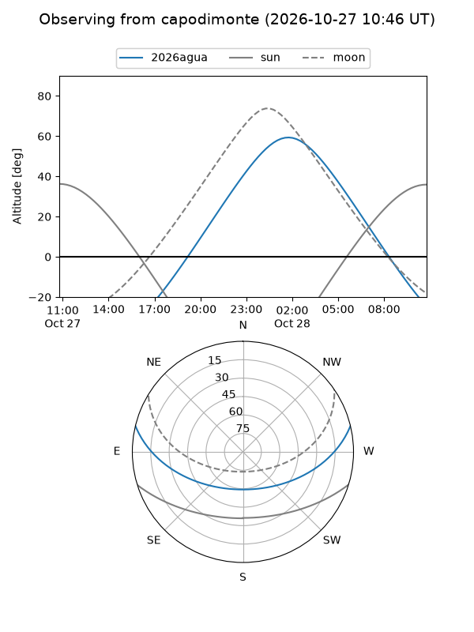
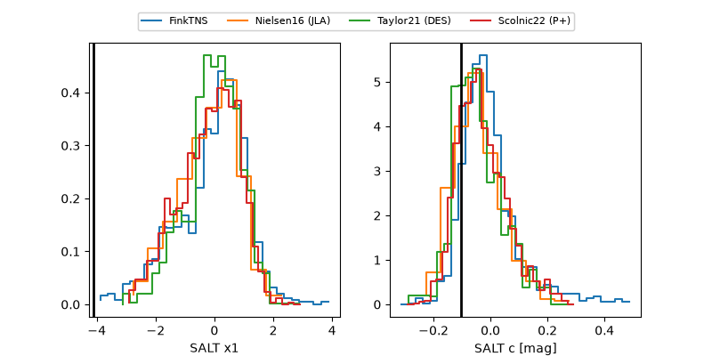

2026agua
Target 2026agua at 2026-10-27 12:52
Aliases and brokers:
FINK-ZTF: ztf.fink-portal.org/ZTF26accthho
Lasair-ZTF: lasair-ztf.lsst.ac.uk/objects/ZTF26accthho
ALeRCE-ZTF: alerce.online/object/ZTF26accthho
YSE-PZ: ziggy.ucolick.org/yse/transient_detail/2026agua
TNS name: wis-tns.org/object/2026agua
Direct TNS query: direct search
alt names
ZTF26accthho (ztf,fink_ztf)
2026agua (tns,yse)
Coordinates:
equatorial (ra, dec) = 76.4775,+10.18130
equatorial (HMS+DMS) = 05:05:54.61,+10:10:52.68
galactic (l, b) = (190.9042,-17.97730)
Flags:
peak dt: -5.0
Photometry:
last ztfg=18.64, ztfr=18.53
3 ztfg, 1 ztfr detections
Lightcurve

Visibility



Additional plots
